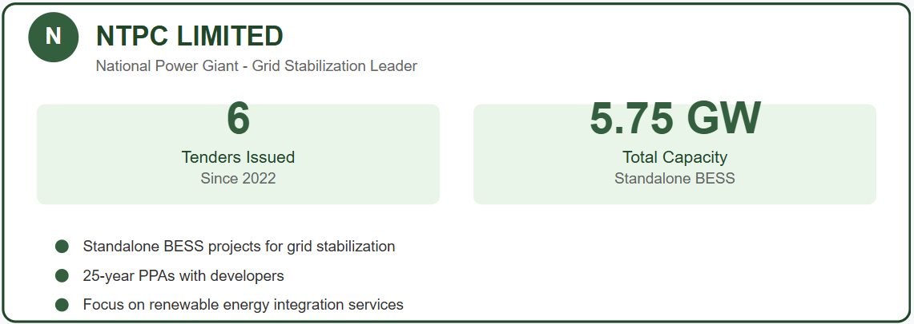
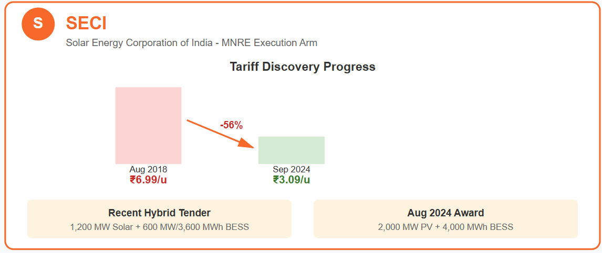
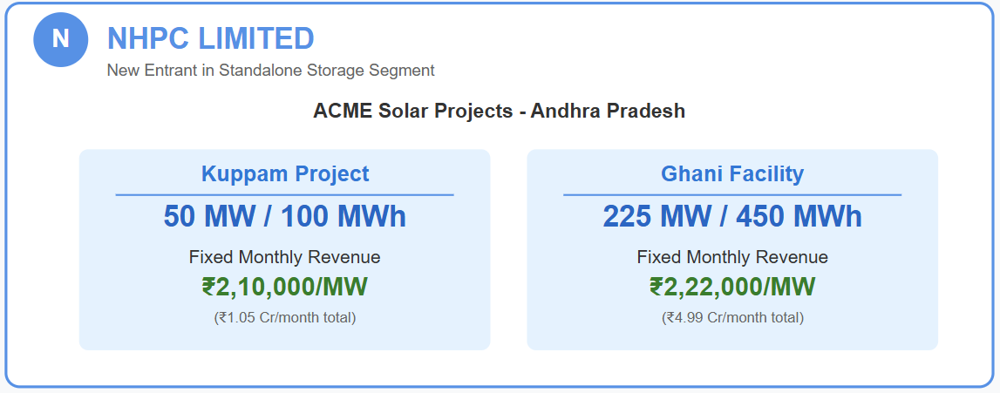
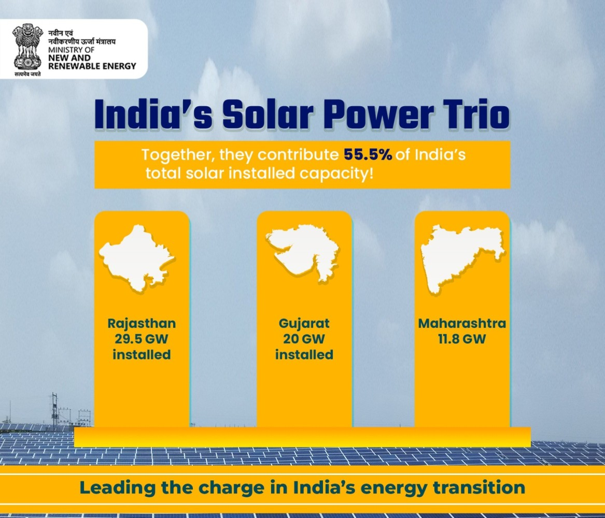
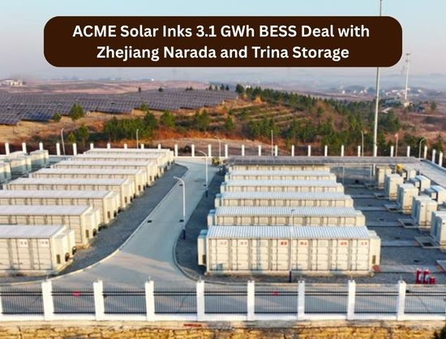
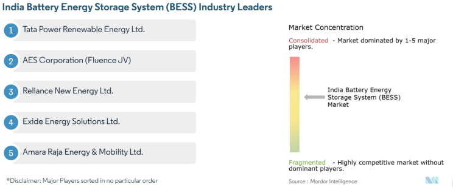
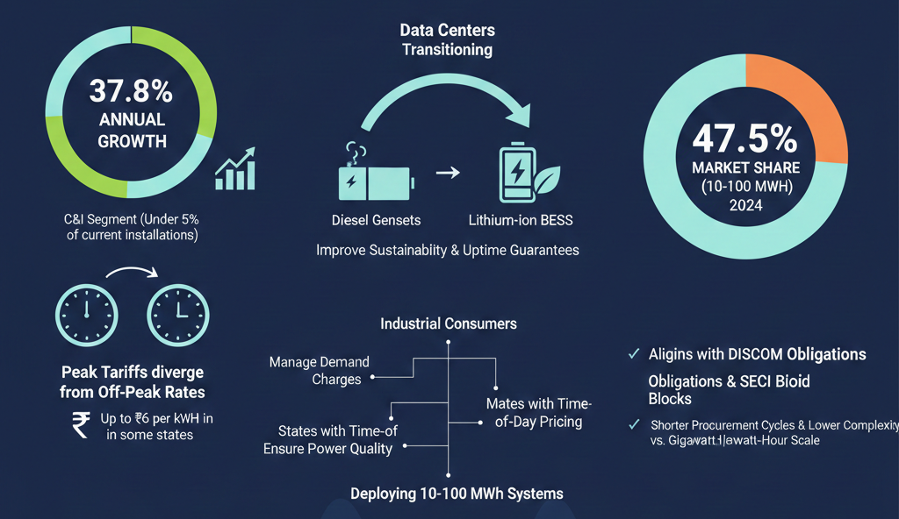
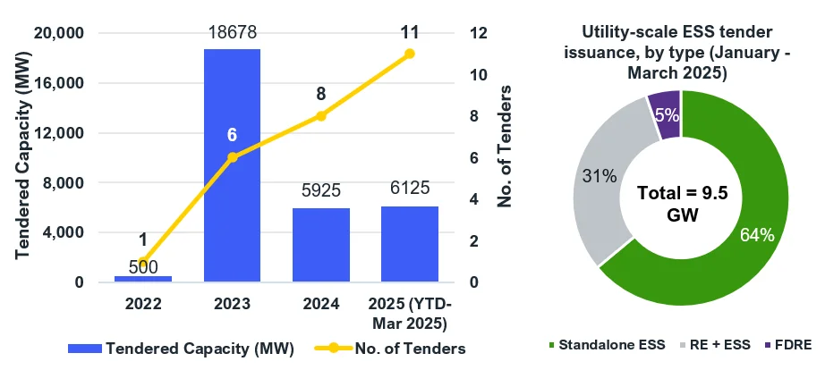
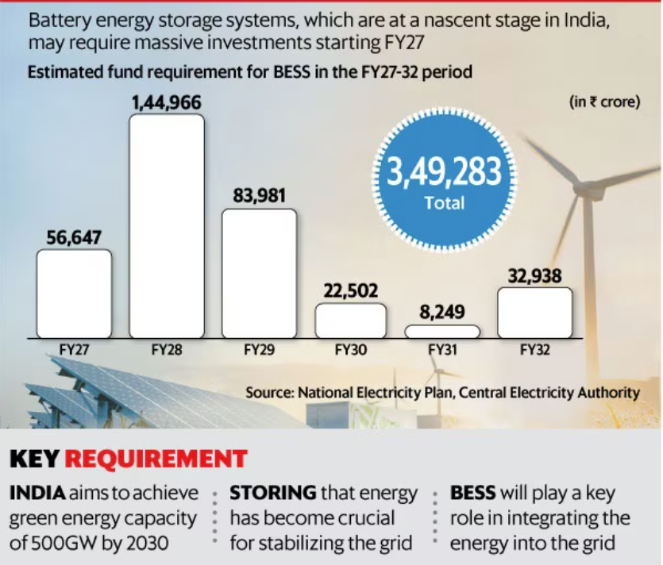
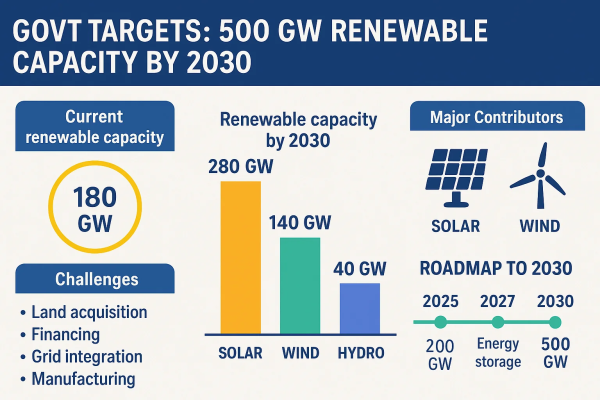

India's battery energy storage market stands at an inflection point, transforming from pilot projects to multi-gigawatt procurement. With the Central Electricity Authority (CEA) projecting a requirement of 74 GW/411 GWh of storage capacity by 2031-32 to support the 500 GW renewable energy target, the buyer ecosystem is rapidly maturing. The market value, estimated at USD 260.5 million in 2024, is accelerating toward USD 2.32 billion by 2033 at a 25.80% CAGR, while more aggressive forecasts suggest a USD 6.67 billion market by 2030.

Central Government Agencies: The Primary Procurement Engines
Central public sector undertakings have emerged as the dominant force in BESS procurement, acting as aggregators and off takers for grid-scale storage.
NTPC Limited leads central agency activity, having issued six tenders totaling 5.75 GW since 2022. The national power giant's procurement strategy focuses on standalone BESS projects that provide grid stabilization and renewable energy integration services. NTPC's tenders typically involve 25-year power purchase agreements (PPAs) with developers, establishing long-term revenue visibility for project developers.

Solar Energy Corporation of India SECI functions as the Ministry of New and Renewable Energy (MNRE) primary execution arm, driving storage integration through innovative tender structures. SECI's recent 1,200 MW solar PV tender with 600 MW/3,600 MWh of battery storage demonstrates the shift toward hybridized procurement. The agency has successfully driven tariff discovery down from ₹6.99/unit in August 2018 to ₹3.09/unit by September 2024, making storage-backed renewable energy increasingly competitive. SECI's pipeline includes 2,000 MW PV with 4,000 MWh BESS awarded in August 2024, with projects averaging longer durations than earlier vintages.

NHPC Limited has entered the standalone storage segment, awarding ACME Solar two projects totaling 275 MW/550 MWh in Andhra Pradesh. These projects will generate fixed monthly revenues of ₹2,10,000/MW for the 50 MW/100 MWh Kuppam installation and ₹2,22,000/MW for the 225 MW/450 MWh Ghani facility.

State-Level Utility Purchasers
State electricity distribution companies (DISCOMs) are becoming mandatory storage buyers through regulatory obligations. Gujarat Urja Vikas Nigam Limited (GUVNL) awarded Oriana Power a 250 MW/500 MWh BESS project, representing one of the largest state-utility contracts. Similarly, Tamil Nadu Green Energy Corporation placed a 400 MWh order with Bondada valued at ₹8.3 billion, targeting grid stability and peak demand management.
Rajasthan, Gujarat, Karnataka, and Maharashtra accounted for 68% of national capacity in 2024, with Rajasthan leading at 280 MWh. These solar-rich states are mandating storage procurement through renewable purchase obligations (RPO) with storage riders, creating predictable demand pipelines.

Renewable Energy IPPs: Vertical Integration and Co-location
Independent power producers represent the fastest-growing buyer segment, driven by the need to firm variable renewable energy for commercial viability.
ACME Solar executed India's largest BESS procurement to date, placing 3.1 GWh of orders with Chinese integrators Trina Storage and Narada for Firm & Dispatchable Renewable Energy (FDRE) projects. The orders will be delivered over 4-8 months for commissioning within 12-18 months across multiple states. ACME's strategy demonstrates how IPPs are scaling storage deployment to meet utility requirements for predictable power delivery.

Adani Green Energy Ltd (AGEL) has pivoted from pure-play renewable development to "large-scale deployment of Battery Energy Storage Systems" as core strategy. The Adani Group's subsidiary, Adani New Industries Limited (ANIL), integrated BESS in its pilot green hydrogen plant in Kutch, showcasing multi-application storage deployment. AGEL's approach reflects how major IPPs view storage as essential for defending renewable energy tariffs and securing dispatch contracts.
Tata Power, through its Agratas cell manufacturing subsidiary, is deploying 100 MW/200 MWh in Jaisalmer that charges at ₹2.50/kWh and discharges during evening peaks near ₹7.00/kWh, capturing arbitrage value while integrating its renewable portfolio. The company plans 100 MW of BESS across 10 locations in Mumbai serving metros, hospitals, and data centers within two years.

Commercial & Industrial: The Emerging Demand Center
The C&I segment, while representing under 5% of current installations, is growing at 37.8% annually as peak tariffs diverge from off-peak rates by up to ₹6 per kWh in some states. Data centers are transitioning from diesel gensets to lithium-ion BESS to improve sustainability credentials and uptime guarantees. Industrial consumers in states with time-of-day pricing are increasingly deploying 10-100 MWh systems to manage demand charges and ensure power quality.
Mid-scale projects in the 10-100 MWh range held 47.5% market share in 2024, aligning perfectly with DISCOM obligations and SECI's standard bid blocks. This segment benefits from shorter procurement cycles and lower complexity compared to gigawatt-hour scale projects.

Market Procurement Mechanisms and Tender Evolution
India's BESS procurement has evolved through three primary tender types: standalone BESS, solar-plus-storage, and Firm Dispatchable Renewable Energy (FDRE). Since 2018, agencies have tendered 171 GWh of total energy storage capacity, including 66 GWh of BESS specifically. The first half of 2025 alone saw 55 GWh of new tenders, indicating accelerating procurement velocity.
While 38.72 GWh of awarded capacity was subsequently cancelled—mostly in early procurements—48.54 GWh is under construction, with nearly 10 GWh of BESS actively being built. The success ratio is improving as tender documents standardize, and developers gain execution experience.
Tenders above 500 MWh are the fastest-growing segment, expanding at 40.4% annually due to economies of scale that reduce per-MWh capex from USD 350,000 at 100 MWh to USD 280,000 at 1,000 MWh. This scale effect is concentrating procurement among developers with strong balance sheets and EPC capabilities.

Financial Support and Market Enablers
The government has provided viability gap funding (VGF) of ₹54 billion to build 30 GW of BESS systems, catalyzing an estimated ₹330 billion in total investment. This support is crucial for first-mover projects while technology costs continue declining.
The production-linked incentive (PLI) scheme for domestic battery manufacturing is expected to reduce dependency on imports, with developers having locked in multi-year supply contracts covering 68% of imported cells in 2024. Emerging lithium reserves in Jammu and Kashmir further strengthen the domestic supply chain narrative.

Regional Deployment Patterns and Grid Integration Value
Rajasthan leads deployment with 280 MWh, followed by Gujarat at 220 MWh. These states leverage high solar irradiance and established renewable energy parks like Dholera to co-locate storage. Adani's 40 MW/120 MWh BESS in Gujarat delivers round-the-clock power at ₹5.95/kWh, demonstrating how storage enables renewable energy to displace conventional capacity.
The CEA now projects 51.5 GW of battery storage capacity will be needed by 2030, requiring ₹2.44 lakh crore (approximately $29 billion) in transmission and storage infrastructure investment. This creates a clear procurement pipeline for central agencies and state utilities alike.

Future Outlook and Buyer Evolution
The next five years will witness a fundamental shift as hybrid solar-wind-BESS systems become the default configuration for large-scale renewable projects. Utilities will remain the dominant buyers, owning 70.7% of capacity in 2024, but C&I growth at 37.8% annually will rebalance the market toward commercial applications.
Key recommendations from recent CEA workshops include establishing a national testing and certification laboratory, incentivizing domestic production of battery management systems and thermal management components, and enabling BESS participation in ancillary services markets. These measures will broaden the value proposition beyond energy arbitrage.